Senzeilles · lacs de l'Eau d'Heure
Un petit coin dechâteau,rien que pour vous.
Un duplex de 170 m² dans un château de village du XVIe siècle, rénové en 2013. Quatre chambres, un jardin privé, jusqu'à 8 personnes.
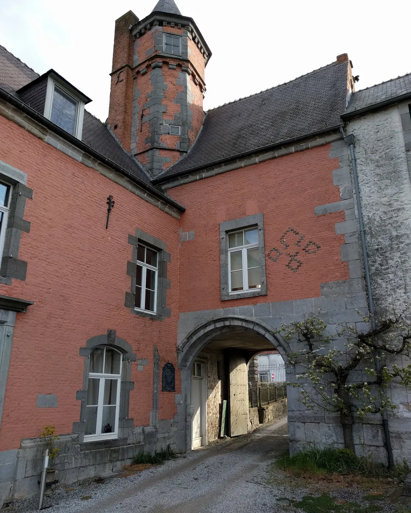
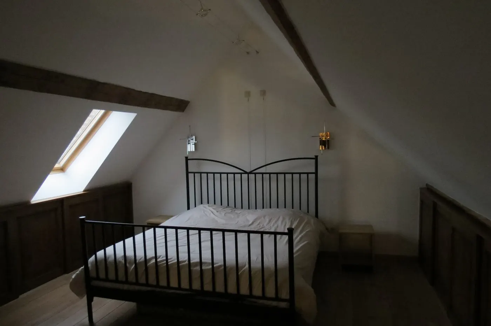
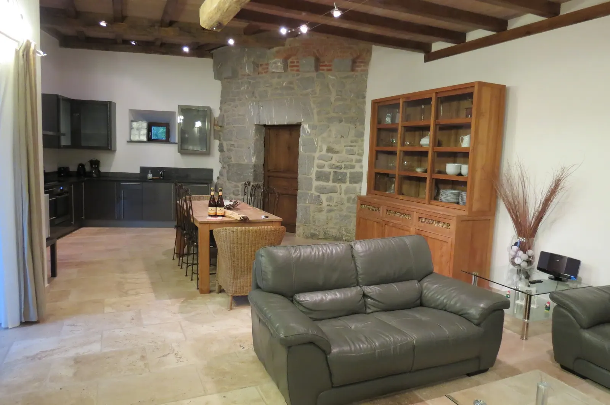
- 170 m² sur deux niveaux
- 8 personnes
- 4 chambres
- 20 m² de salon
- 2013 année de la rénovation
Le château
Des murs de pierre et de brique, et tout le confort.
Vous entrez par un porche voûté, dans la cour d'un château de village du XVIe siècle. À l'intérieur : des chambres logées dans les tours, des poutres, de la pierre apparente, une cuisine ouverte et un salon pour toute la tablée.
Le duplex a été rénové en 2013. Les draps sont fournis, le jardin est à vous, et les lacs de l'Eau d'Heure sont tout proches.
« Endroit très très romantique. »
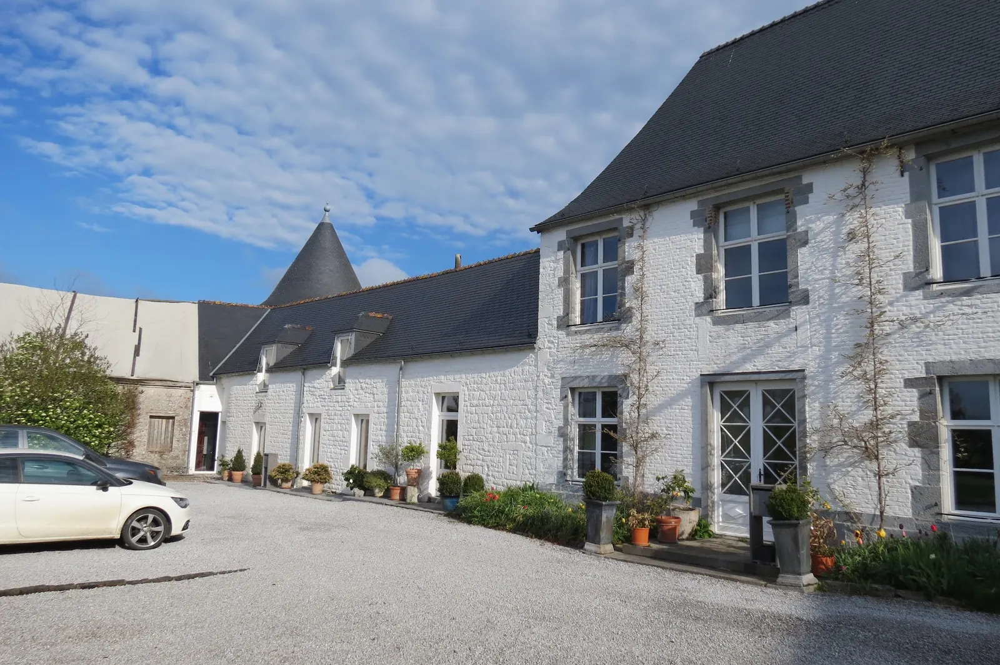
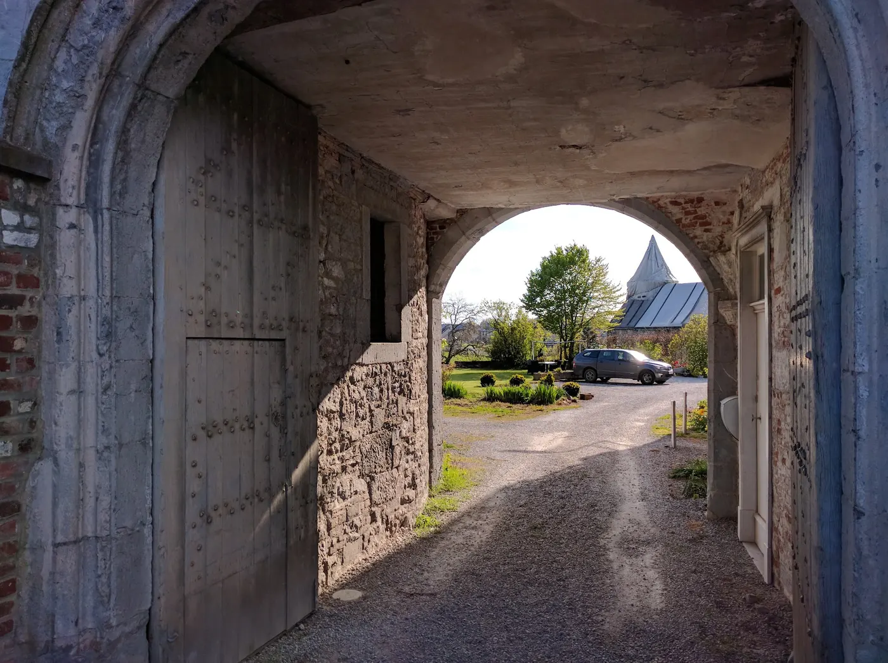
La visite, étage par étage.
Un duplex de 170 m². Chaque chambre a sa personnalité : dans les tours, ou sous les poutres du toit.
Rez-de-chaussée
- CuisineÉquipée : four, micro-ondes, lave-vaisselle
- SalonCanapés, bibliothèque20 m²
- Salle à mangerUne grande table pour tous20 m²
- Chambre Tour2 lits simples12 m²
- WCAu rez-de-chaussée
À l'étage
- Chambre Tour1 lit double20 m²
- Chambre sous le toit2 lits simples25 m²
- Chambre sous le toit1 lit double20 m²
- Salle de bainDouche et baignoire
- Coin lecture et écritureSous la charpente
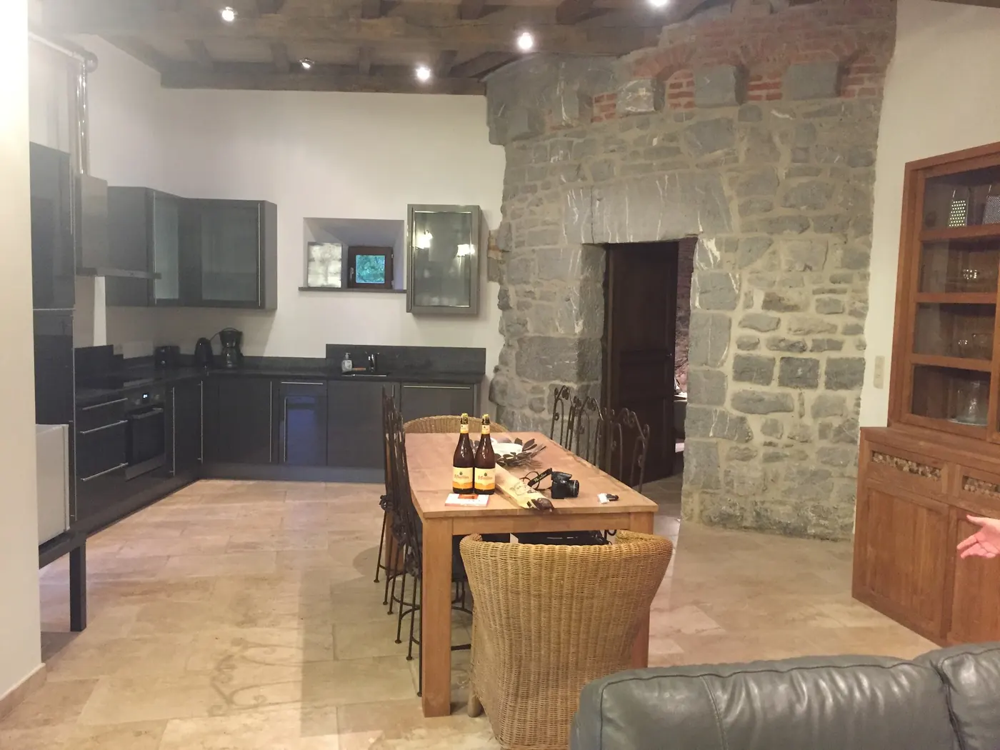
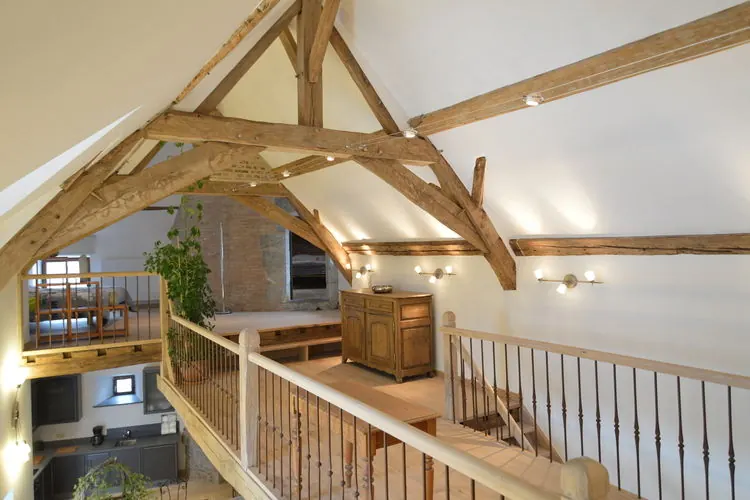
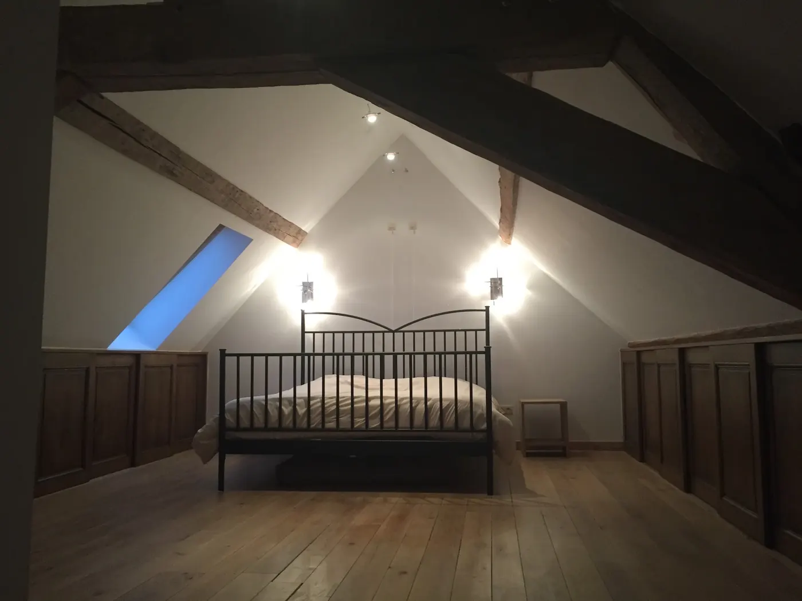
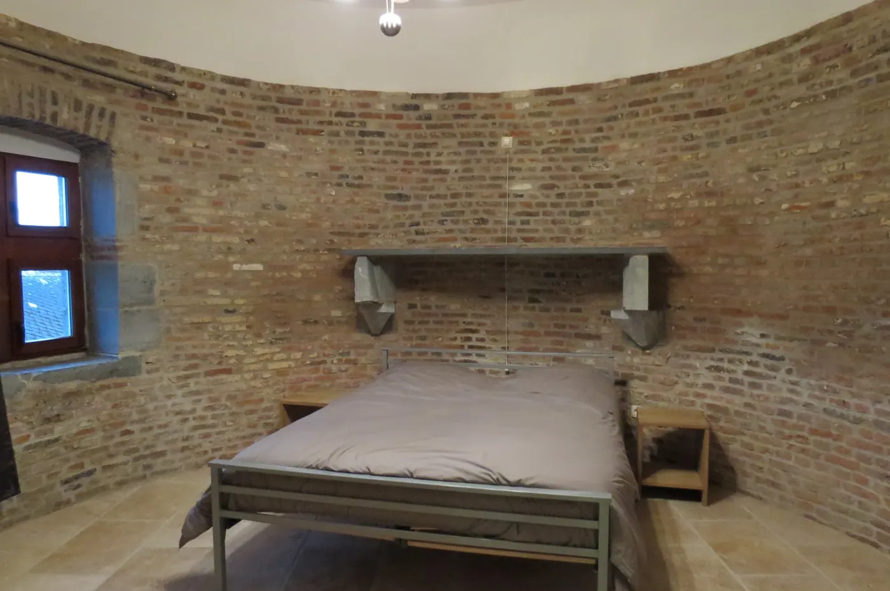
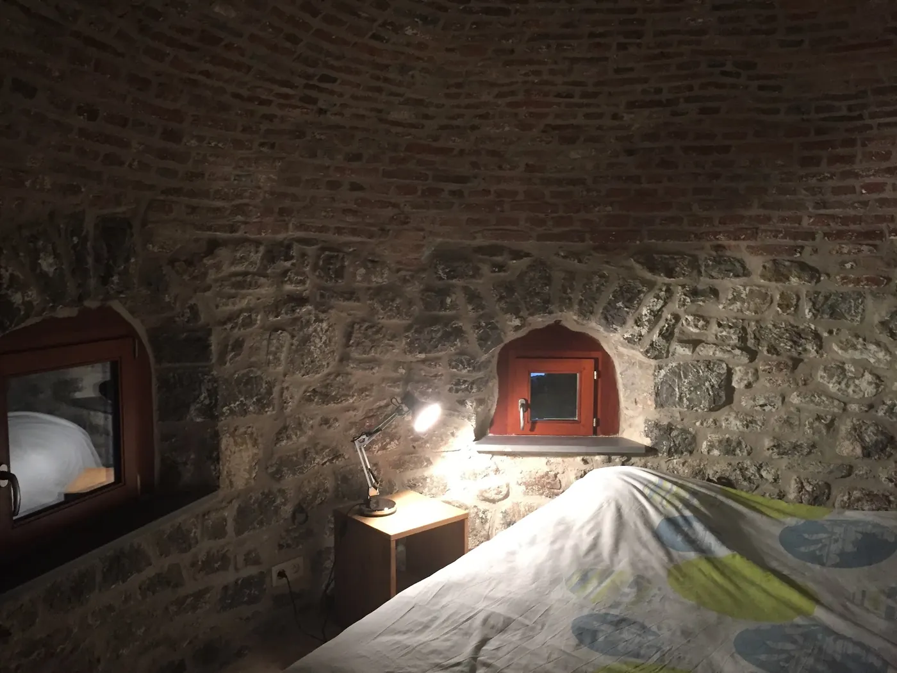
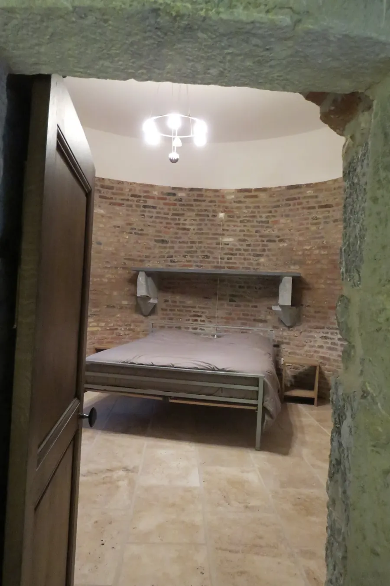
Avis Google
Au livre d'or de Google.
Quelques mots laissés par des visiteurs, cités tels quels.
Vos dates, en deux clics.
Choisissez l'arrivée et le départ : le prix exact vous est donné avec la réponse des propriétaires.
Tout est sur place.
Ce que le gîte met à votre disposition.
La cuisine
- Cuisine équipée
- Four
- Micro-ondes
- Lave-vaisselle
Le confort
- Draps fournis
- Lave-linge et sèche-linge
- Wifi gratuit
- Salle de bain avec douche et baignoire
- Coin lecture et écriture
Dehors
- Jardin privé
- Parking dans la cour du château
Venez voir le château.
Senzeilles, dans la commune de Cerfontaine, à deux pas des lacs de l'Eau d'Heure. Écrivez ou appelez les propriétaires pour vos dates.
Téléphone
0495 45 95 08Adresse
Rue du Château 154A, 5630 Senzeilles (Cerfontaine)
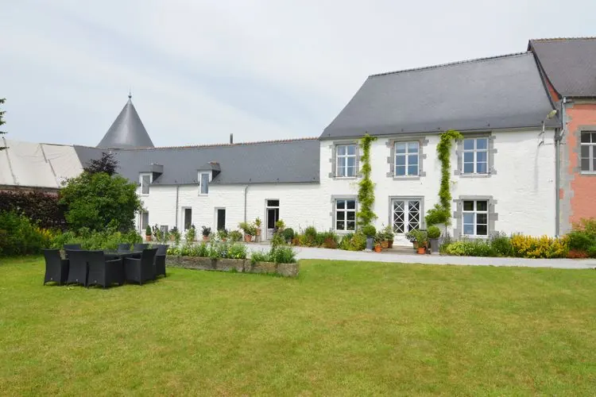
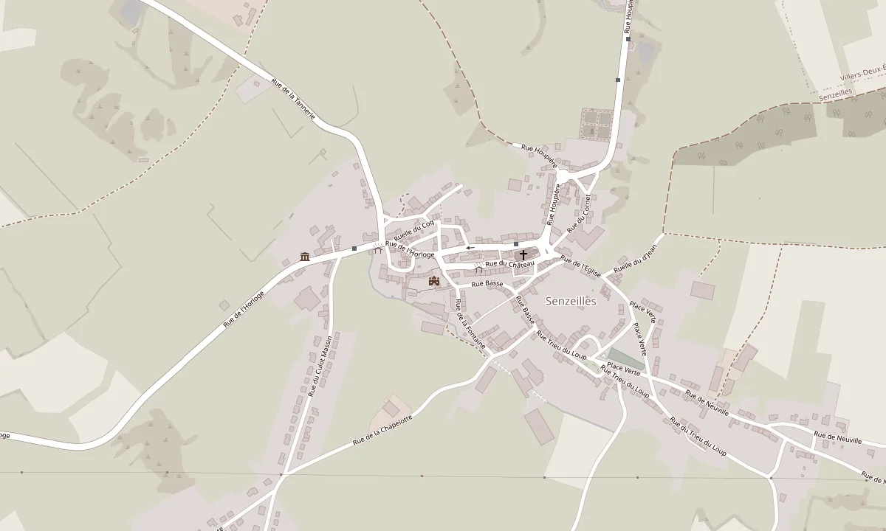
Itinéraire © OpenStreetMap